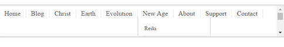

Replication Project #2
For my 2nd replication project, I used simonarich.com as template, because it is visually simple and there are many elements on this page that I never try to create before.
One of these element is the dropdown menu. Not all the navigation tab have a sub-menu, only "Christ", "Earth" and "New Age" have them. The biggest challenge in this replication was "Use only CSS child selectors" to dynamically make the sub-menu pop out.
The biggest problem I had was figuring out why the sub-menu doesn't appear in front. The menu does appear on hover, but it was hidden within the container causing a scrollbar to appear on the right hand side.

But the problem didn't get stuck for long, after a few minutes of Googling I discovered that this is caused by the overflow property. I was using the overflow property because the container div is collapsing due to floating elements that are inside. So I worked around it and found out that the better way to prevent collapsing div is to use clear property.
This is the first time that it actually made any sense how clear works. And by the way, you can ignore the videos embedded here. They are simply placeholder based on the template.